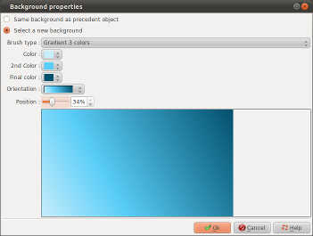
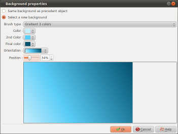

Introduzione
La finestra "Propietà
sfondo" consente di definire le impostazioni per lo sfondo della
diapositiva:

Questa finestra si richiama con un doppio click sulla zona sfondo di una diapositiva, nella timeline.

Questa finestra si richiama con un doppio click sulla zona sfondo di una diapositiva, nella timeline.
Descrizione della finestra
Stesso sfondo dell'oggetto
precedente.
Se questa opzione è
selezionata, la diapositiva non avrà definizione di
fondo, ma utilizzerà lo stesso sfondo della diapositiva
precedente :
Selezionare un nuovo sfondo
- Se la diapositiva precedente, non ha definito uno sfondo, il controllo continua a ritroso fino ad una diapositiva che ha definito uno fondo.
- Se nessuna diapositiva precedente ha definito uno sfondo, uno sfondo nero verrà utilizzato.
Se questa opzione è
selezionata, la diapositiva avrà un proprio sfondo
definito .
In tal caso, le seguenti aree impostano le proprietà per lo sfondo.
In tal caso, le seguenti aree impostano le proprietà per lo sfondo.
| Pennello solido | Consente di selezionare un colore semplice. |
| Gradiente di 2 colori | Seleziona un gradiente di 2 colori |
| Gradiente di 3 colori | Seleziona un gradiente di 3 colori |
| Immagine dalla libreria | Consente di selezionare un'immagine di sfondo dalla libreria |
| Immagine dal disco |
 Seleziona un file immagine. È necessario fornire
un nome di file.
Seleziona un file immagine. È necessario fornire
un nome di file. Visualizza la Finestra inquadratura immagine e
correzione per regolare le correzioni
dell'inquadratura e l'immagine. Visualizza la Finestra inquadratura immagine e
correzione per regolare le correzioni
dell'inquadratura e l'immagine. |
Vedi anche
ffDiaporama 1.0